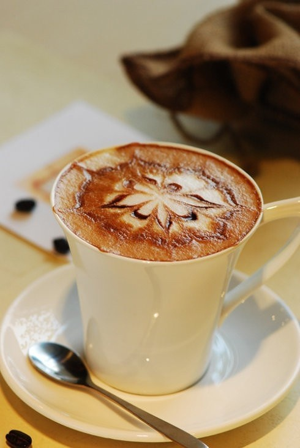

摩卡咖啡
摩卡咖啡（Mocha Cafe）是由意大利浓缩咖啡、巧克力酱、鲜奶油和牛奶混合而成的一种古老的咖啡。 摩卡咖啡其历史要追溯到咖啡的起源，它是由意大利浓缩咖啡、巧克力酱、鲜奶油和牛奶混合而成，摩卡得名于有名的摩卡港。十五世纪，整个中东非咖啡国家向外运输业不兴盛，也门摩卡是当时红海附近主要输出一个商港，当时咖啡主要是集中到摩卡港再向外输出的非洲咖啡，都被统称摩卡咖啡。而新兴的港口虽然代替了摩卡港的地位，但是摩卡港时期摩卡咖啡的产地依然保留了下来，这些产地所产的咖啡豆，仍被称为摩卡咖啡豆。
味道特征
真正的摩卡咖啡有点儿像爱情，既酸又甜。而摩卡的存在，理由也很简单，就是为了让爱恋中的人们了解爱情的甜美和波折，为了告诉我们幸福的简单。
摩卡咖啡恐怕是最受女孩子欢迎的咖啡品种，这缘于它浓厚的巧克力味和牛奶味，绝大多数对咖啡有略微了解的人会认为它只是在拿铁中添加了巧克力。这种说法不算错，但不完全正确。这种说法只将摩卡当做了咖啡的一种“制作方法”，而完全忽视了真正的摩卡其实是咖啡一个“品种”。只不过能够喝到地道的“品种”摩卡的人实在是不多。地道的摩卡怕是不太容易被女孩子很快爱上的，它除了具有天然的巧克力余味外，辛辣、刺激、带有浓郁的酒香是它不太温柔的一面。
摩卡咖啡还具有的巧克力余味，让人们很自然地就想到把巧克力添加到咖啡里。
事实上，它后一种特性在越来越文明的商业世界中得到了发扬光大，如今绝大多数咖啡馆里的摩卡咖啡并不使用也门咖啡豆，而是添加了巧克力糖浆的咖啡（正是因此，“品种”摩卡变成了“制作方法”摩卡）。而那种辛辣的豪迈则因为也门咖啡豆的低产量而成为少数“贵族”展现品位的专利了，如果想喝到这种摩卡，一般的咖啡馆是不会让你满意的。
摩卡咖啡豆平均颗粒较小，带有生姜的狂野泼辣气息、明亮独特的滋味。